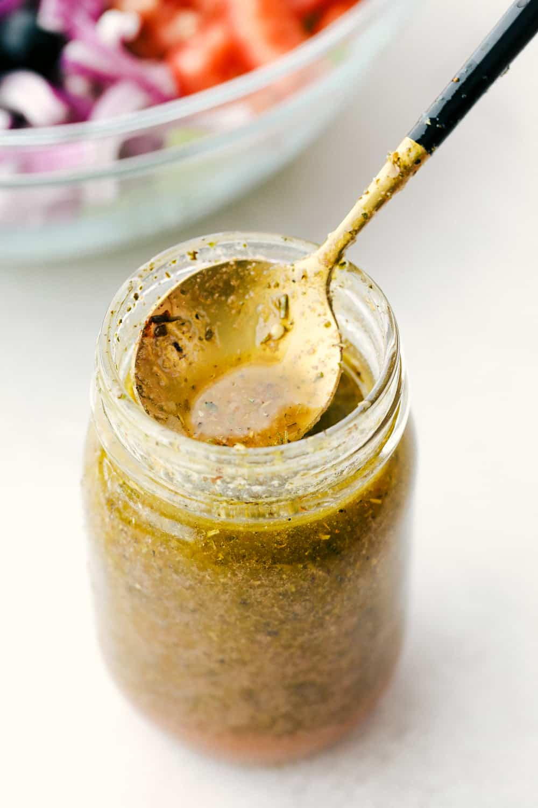

Greek Salad Dressing

American-Style Creamy Greek Dressing
This is a dressing I made for an American-style Greek salad,
one with a hearty lettuce not typically found in a traditional
Greek salad. This one will surely become part of your weekly rotation!
Ingredients
- 1/2 Cucumber, chopped
- 1/2 package brine-packed Feta
- 1/4 cup greek Yogurt
- 3 Tbsp milk
- 3 cloves garlic, finely minced
- 1/4 cup EVOO
- 1 tsp dried oregano
- salt to taste
Steps
- Process cucumber, garlic, milk, yogurt, and EVOO
- Add in dry spices and salt and pulse
- Cover and chill for 30 minutes
- Enjoy